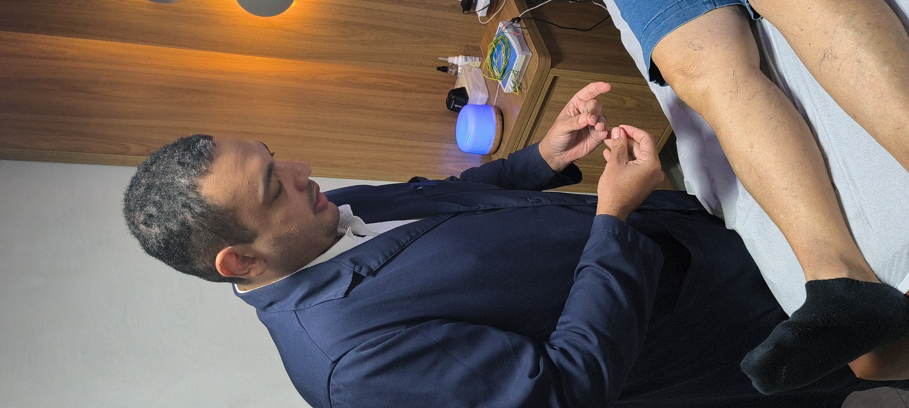
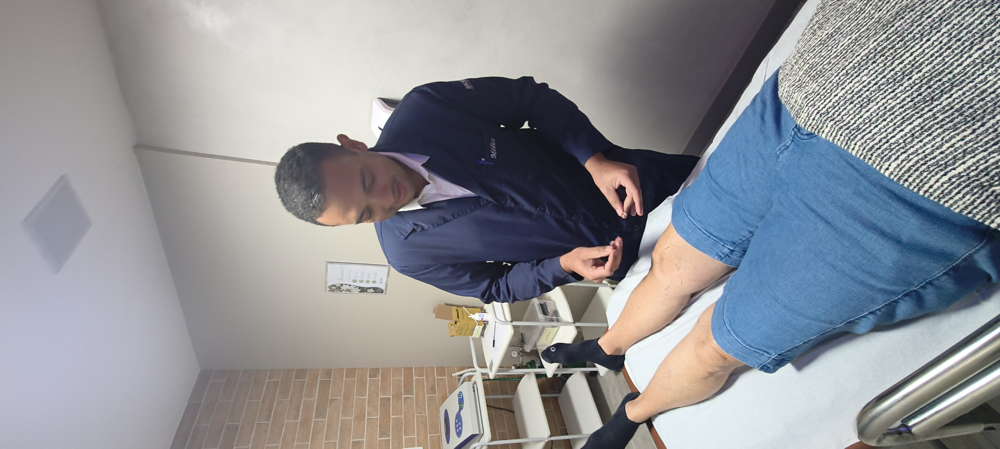
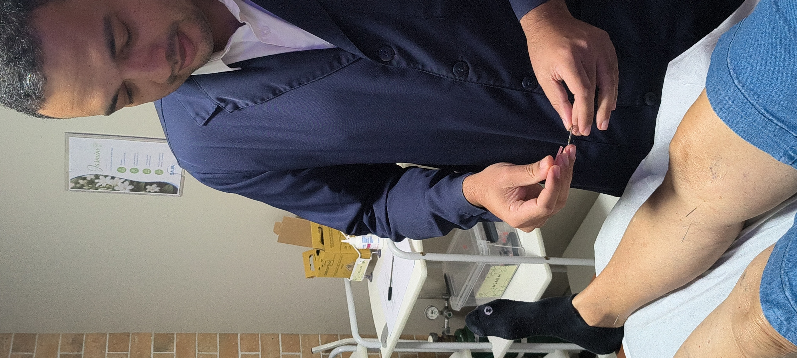

Geriatria
Acompanhamento clínico completo para um envelhecimento saudável, com atenção à independência e à qualidade de vida.
- Envelhecimento saudável
- Distúrbios de mobilidade
- Saúde osteomuscular
- Sarcopenia
Dor · Geriatria · Acupuntura
Cuidado integrado para um envelhecimento saudável e uma vida sem dor.
Atendimento médico dedicado à saúde do idoso e ao tratamento da dor, unindo a precisão da Geriatria à abordagem complementar da Acupuntura — um cuidado que olha para a pessoa por inteiro, em cada fase da vida.
Atuação clínica
Duas frentes de tratamento que se complementam: o cuidado clínico do envelhecimento e o alívio da dor pelas vias da Acupuntura.

Acompanhamento clínico completo para um envelhecimento saudável, com atenção à independência e à qualidade de vida.

Tratamento da dor crônica e aguda com técnicas de acupuntura e bloqueios, de forma individualizada.
Depoimentos
Depoimentos ilustrativos, fornecidos a título de exemplo, sujeitos a substituição por relatos reais de pacientes.
Convênios
Consulte sempre a cobertura vigente do seu plano antes do agendamento.
Onde atender

Av. Tancredo Neves, 2539 — Caminho das Árvores, Salvador – BA
Torre Londres, 13º andar, Sala 1309
CEP 41820-021
Endereço e horários disponíveis na confirmação do agendamento.
Consultar endereçoEndereço e horários disponíveis na confirmação do agendamento.
Consultar endereço